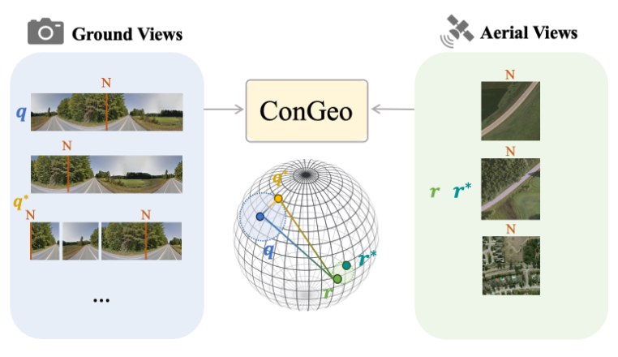

Chang Xu
ECEO lab, EPFL
Contact: chang.xu@epfl.ch
Github: Chasel-Tsui
Google Scholar: Chang Xu
CV: Chang Xu
I'm currently a Phd candidate (2024-) of the ECEO lab at EPFL, supervised by Prof. Devis Tuia. During my doctoral study, my research will focus on the climate foundation model. Prior to that, I obtained my Bacholar's and Master's degrees both in Electronic Information School, Wuhan University. I was honored to be supervised by Prof. Wen Yang, who guided me onto the journey of scientific research and helped me harvest a bunch of research experience and outcomes on object detection and localization, especially the tiny object detection series.
Recent News
2024
2023
2022
Educations
- Phd Candidate, 2024-
EPFL, Switzerland - Exchange Master Student, 2023
EPFL, Switzerland - M.Sc in Communication and Information System, 2021-2024
Wuhan University, China - Winter School, 2020
Oxford University, the UK - B.Sc in Electronic Information Engineering, 2017-2021
Wuhan University, China
Selected Publications
(* Equal Contribution, # Corresponding Author)|  |
ConGeo: Robust Cross-view Geo-localization across Ground View Variations. [Paper] [Code] Li Mi*, Chang Xu*,#, Javiera Castillo-Navarro, Syrielle Montariol, Wen Yang, Antoine Bosselut, Devis Tuia. ECCV, 2024.
|

|
Learning Cross-view Visual Geo-localization without Ground Truth. [Paper] [Code] Haoyuan Li, Chang Xu, Wen Yang#, Huai Yu, Gui-Song Xia. IEEE Transactions on Geoscience and Remote Sensing, 2024.
|
|
A3Track: Achieving Precise Aerial Tracking with Receptive Field Alignment. [Paper] [Code] Xu Lei, Chang Xu, Wensheng Chen, Wen Yang#, Gui-song Xia. IEEE Transactions on Geoscience and Remote Sensing, 2023.
|
|

|
Dynamic Coarse-to-Fine Learning for Oriented Tiny Object Detection. [Paper] [Code] Chang Xu, Jian Ding, Jinwang Wang, Wen Yang#, Huai Yu, Lei Yu#, Gui-song Xia. CVPR, 2023.
|

|
Drone-based RGBT Tiny Person Detection. [Paper] [Code] Yan Zhang*, Chang Xu*, Wen Yang#, Guangjun He, Huai Yu, Lei Yu, Gui-song Xia. ISPRS Journal of Photogrammetry and Remote Sensing, 2023.
|
|
Motion Robust High-Speed Light-Weighted Object Detection with Event Camera. [Paper] [Code] Bingde Liu, Chang Xu, Wen Yang#, Huai Yu, Lei Yu. IEEE Transactions on Instrumentation & Measurement, 2023.
|
|

|
RFLA: Gaussian Repective Field based Label Assignment for Tiny Object Detection. [Paper] [Code] Chang Xu, Jinwang Wang, Wen Yang#, Huai Yu, Lei Yu, Gui-song Xia. ECCV, 2022.
|

|
Detecting Tiny Objects in Aerial Images: A Normalized Wasserstein Distance and A New benchmark. [Paper] [Code] Chang Xu*, Jinwang Wang*, Wen Yang#, Huai Yu, Lei Yu, Gui-song Xia. ISPRS Journal of Photogrammetry and Remote Sensing, 2022.
|
|
Dot Distance for Tiny Object Detection in Aerial Images. [Paper] [Code] Chang Xu*, Jinwang Wang*, Wen Yang, Lei Yu. EarthVision (CVPRW), 2021
|
Awards
- Outstanding Graduate Thesis, 2021
Top 5%
Wuhan University - Hubei Translation Final Contest, 2020
Second Prize
Hubei, China - National Undergraduate Electronic Design Contest (Hubei), 2019
First Prize
Hubei, China